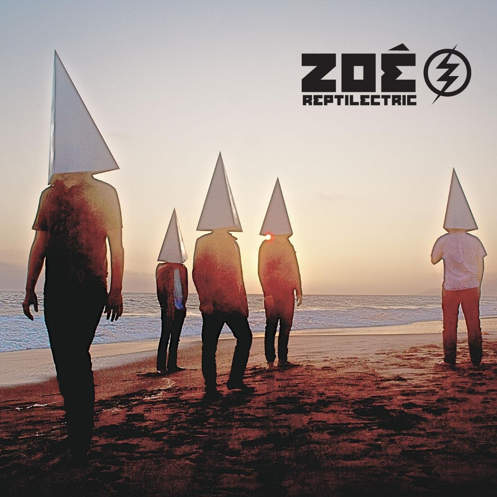
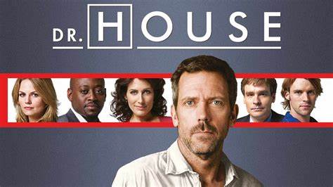
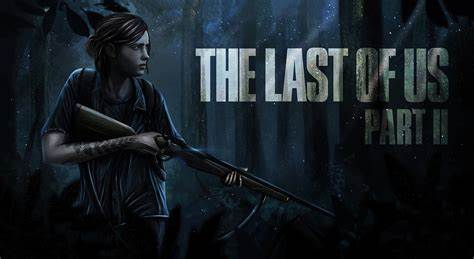

Alan Gómez Reyes
Mi nombre es Alan y tengo 25 años. Nací el 25 de agosto de 1996, en el Estado de México,
vivo con mi familia, mas especificamente, mi mamá y mis hermanos. Tengo un hermano gemelo
que se llama Adán. Desde que nací he vivido en la misma casa, en el municipio de Nezahualcóyotl.
No recuerdo donde estudie el kinder, pero la primaria la estudie en la primaria Braulio Rodriguez donde llevaba beca por
buen promedio, aproximadamente a los 9-10 años me descalabre, pero fue algo leve. La secundaria la curse en la 117 Gabriela Mistral,
lugar donde conocí al que es mi mejor amigo hasta el día de hoy.
El periodo de la prepa fue un poco complicado para mí, puesto que perdí mucho tiempo. Primero estuve en la vocacional 7 del IPN, pero
por diversas razones me salí en el 3er semestre, despues entre a la prepa 2 de la UNAM donde curse 2 años y medio. A meses de terminar,
por malas decisiones abandone nuevamente la prepa y mis padres me metieron a trabajar.
Dure trabajando aproximadamente 6 años, tiempo en el que sucedieron muchas cosas, entre las cuales termine la preparatoria por medio
del llamado "exámen único". Trabaje en una fabrica, en un call center y finalmente, donde duré mas tiempo fue en un banco,
como analista de créditos hipotecarios, fue un buen trabajo donde aprendí muchas cosas.
Mi plan inicial era entrar desde antes a la escuela, pero debido a la pandemia y a la perdida de mi papá a casua de esta, tuve que
esperar un año más para poder entrar. Elegí esta carrera por recomendación de mis hermanos, puesto que mis 2 hermanos y mi hermana estudiaron
en esta escuela. Al principio hubo un conflicto en mí, porque yo queria estudiar Actuaria, pero al comenzar me gusto mucho la carrera, y
así, sigo hechandole ganas hasta el día de hoy.
| Mi artista favorito | Serie favorita | Videojuego favorito |
|---|---|---|
|
zoe  |
Doctor House  |
The last of us - part II  |